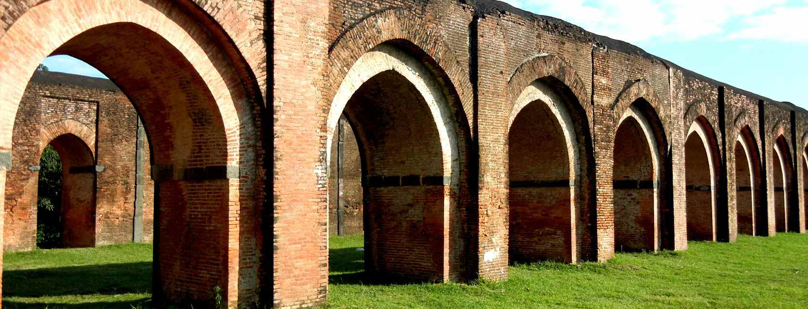

MALDA

The gateway to North Bengal, Malda, with its rich history and heritage, is one of the most famous tourist destinations of West Bengal, nestled at the confluence of the Mahananda and Kalindi rivers. Malda town, with all its grace, adds to the beauty of Bengal.
Malda was previously known as English Bazaar. It got that name from the English factory that was established here in 1771. From Malda, you can visit Gaur and Pandua. Gaur was the capital of three dynasties of ancient Bengal - the Buddhist Palas, the Hindu Senas and the Muslim Nawabs. Pandua, once the alternate seat of power to Gaur, has the third largest concentration of Muslim monuments in Bengal

HOW TO REACH ?
Nearest Airport:Darjeeling
Nearest Railway Station: Darjeeling
Nearest Bus Stand: Darjeeling